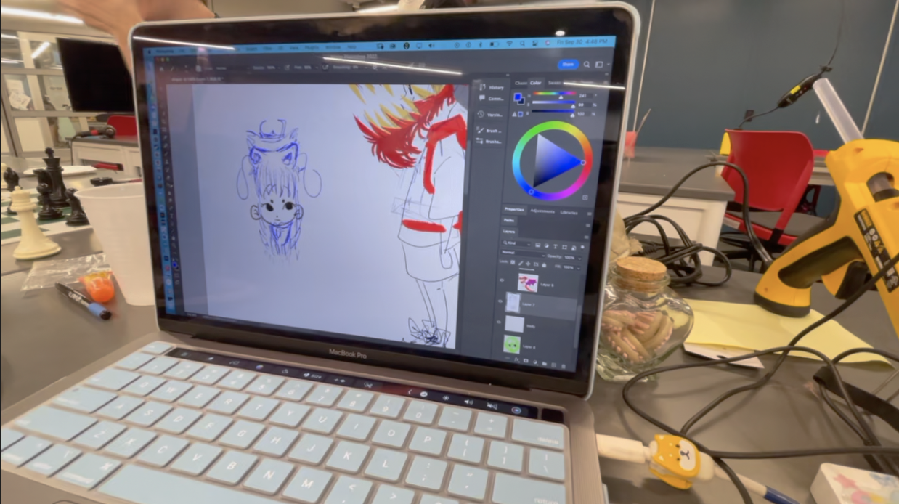

Fowler School of Engineering Collaboration with Higher Ground Youth
In my fall semester of 2022, I was approached by my boss at the time, Carlos Vergara- with a request to
participate in a design collaboration with the local HIgherGround organization chapter, to help with
creating kid's dream halloween costumes as a part of Prof."never-call-me-professor"Jon Humphreys 3d priting class.
This project was divided into groups- and as such I had the wonderful opportunity to meet one of my closest friends though the
Collab Od Da Century with Jackson Goldberg'22 , as well as help and support
from Kalin Richardson'26 .
Together we worked tirelessly for weeks to build the perfect halloween costume that would fit the requested description of
"I want to be a japanese dragon!".
design
As we were limited by only our budget and imagination, we had to be very resourceful when it came to materials. This resulted in us opting to go the DIY route with the use of a Stratasys J850 for high fidelity, full color, and full detail 3d prints for the dragon eyes, one child sized bicycle helment for a safe,comfortable,and secure foundation, chicken wire and pvc piping for structural support,led lights, interior wiring, and five trips to a craft stores worth of fabric, felt, needles, bobbins, markers, paint, fiber fill and glue.
+ prototype

= dream halloween
The project was nothing short of successful.
Managing the project was a giant in itself, with no framework of reference to go off we worked quickly with the time we
had (3 weeks in October).Ultimately, the planing and work payed off, as we had one very happy 'client' in our asssigned 'client', at
Higher Ground, of whom gave very positive feedback to our final deliverable. >:-)
The experience was very rewarding to the class cohort, as to a good amoun tof students in the seciton, it was a first of many opportunites for
positive comminity involvement and impact, and an insight to the fostering and facilitation of change as a result of inspiration.
Having had the opportunity to recieve assistance and support from such organizations as a kid- like the Friendly Center ,Boys and Girls Club, and G.R.I.P-
I am constantly looking for ways to give back to the community, and to the programs that helped raise me and my peers towards success. Having had the opportunuty
to be involved in this journey for others has been a gift, and a reminder to continue to foster growth and inclusion for others, and to inspire and lead with kindness.
This collaboration was even featured on the news and on the Chapman University
blog page, if you would like to get involved in supporting organizations like these and their missions, please reach out! Many of these organizations are non-profits and
rely on public support for their continued success! Get involved today!